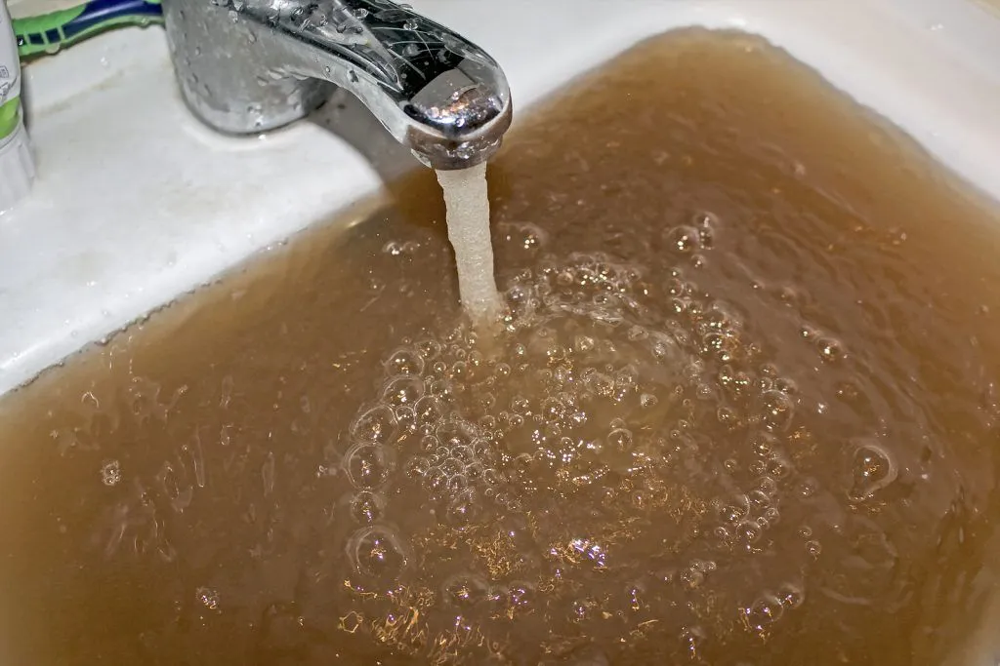
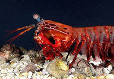

.jpg)
Water is an inorganic compound with the chemical formula H2O. It is a transparent, tasteless, odorless,[c] and nearly colorless chemical substance, and it is the main constituent of Earth's hydrosphere and the fluids of all known living organisms (in which it acts as a solvent). It is vital for all known forms of life, despite not providing food energy or organic micronutrients. Its chemical formula, H2O, indicates that each of its molecules contains one oxygen and two hydrogen atoms, connected by covalent bonds. The hydrogen atoms are attached to the oxygen atom at an angle of 104.45°. "Water" is also the name of the liquid state of H2O at standard temperature and pressure. Because Earth's environment is relatively close to water's triple point, water exists on Earth as a solid, a liquid, and a gas. It forms precipitation in the form of rain and aerosols in the form of fog. Clouds consist of suspended droplets of water and ice, its solid state. When finely divided, crystalline ice may precipitate in the form of snow. The gaseous state of water is steam or water vapor. Water covers about 71% of the Earth's surface, with seas and oceans making up most of the water volume (about 96.5%). Small portions of water occur as groundwater (1.7%), in the glaciers and the ice caps of Antarctica and Greenland (1.7%), and in the air as vapor, clouds (consisting of ice and liquid water suspended in air), and precipitation (0.001%). Water moves continually through the water cycle of evaporation, transpiration (evapotranspiration), condensation, precipitation, and runoff, usually reaching the sea. Water plays an important role in the world economy. Approximately 70% of the fresh water used by humans goes to agriculture. Fishing in salt and fresh water bodies has been, and continues to be, a major source of food for many parts of the world, providing 6.5% of global protein. Much of the long-distance trade of commodities (such as oil, natural gas, and manufactured products) is transported by boats through seas, rivers, lakes, and canals. Large quantities of water, ice, and steam are used for cooling and heating in industry and homes. Water is an excellent solvent for a wide variety of substances, both mineral and organic; as such, it is widely used in industrial processes and in cooking and washing. Water, ice, and snow are also central to many sports and other forms of entertainment, such as swimming, pleasure boating, boat racing, surfing, sport fishing, diving, ice skating, snowboarding, and skiing.

Mantis shrimp are carnivorous marine crustaceans of the order Stomatopoda (from Ancient Greek στόμα (stóma) 'mouth', and ποδός (podós) 'foot'). Stomatopods branched off from other members of the class Malacostraca around 340 million years ago. Mantis shrimp typically grow to around 10 cm (3.9 in) in length, while a few can reach up to 38 cm (15 in). A mantis shrimp's carapace covers only the rear part of the head and the first four segments of the thorax. Varieties range in colour from shades of brown to vivid colours, with more than 520 species of mantis shrimp known. They are among the most important predators in many shallow, tropical and subtropical marine habitats. However, despite being common, they are poorly understood, as many species spend most of their lives sheltering in burrows and holes. Called "sea locusts" by ancient Assyrians, "prawn killers" in Australia, and now sometimes referred to as "thumb splitters"—because of the animal's ability to inflict painful wounds if handled incautiously—mantis shrimp have powerful raptorial appendages that are used to attack and kill prey either by spearing, stunning, or dismembering. Some mantis shrimp species have specialised calcified 'clubs' that can strike with great power, while others have sharp forelimbs used to seize the prey (hence the term "mantis" in their common name).

Chess boxing, or chessboxing, is a hybrid sport that combines two traditional disciplines: chess and boxing. Two combatants play alternating rounds of blitz chess and boxing until one wins by checkmate or knockout. It is also possible to win by time penalty as in normal chess, and by boxing decision if there is a draw in the chess round. Typically, events are held in a standard boxing ring using standard amateur boxing equipment and rules. The chess round is also played in the ring with the table, board, and seating being moved in and out of the ring for each round. The governing bodies of chessboxing are the World Chessboxing Association and the World Chess Boxing Organisation. Chessboxing was invented by French comic book artist Enki Bilal and adapted by Dutch performance artist Iepe Rubingh as an art performance and has subsequently grown into a competitive sport. Chessboxing is particularly popular in the United Kingdom, India, Finland, France, and Russia.